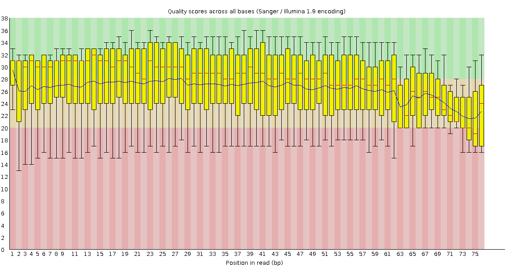
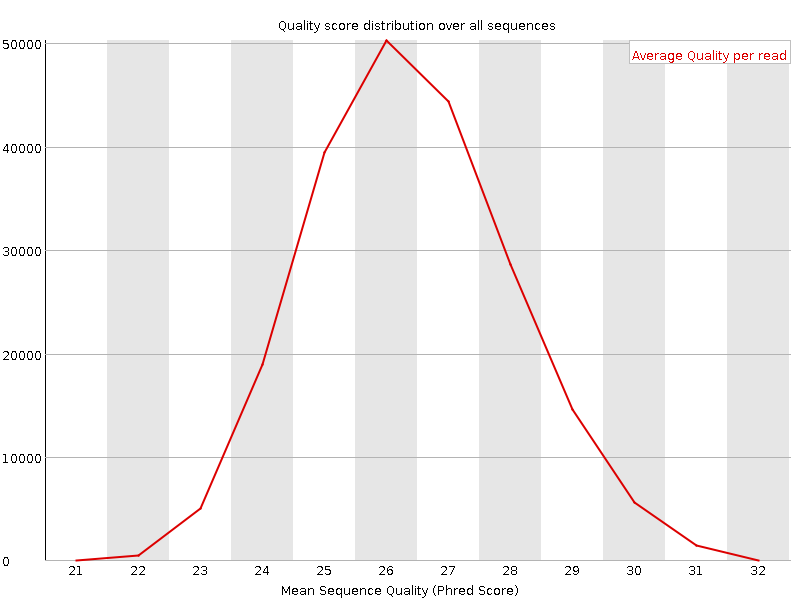
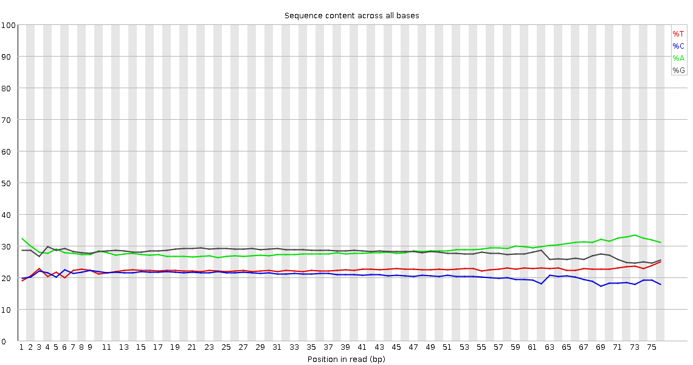
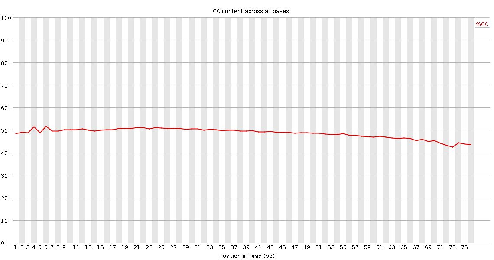
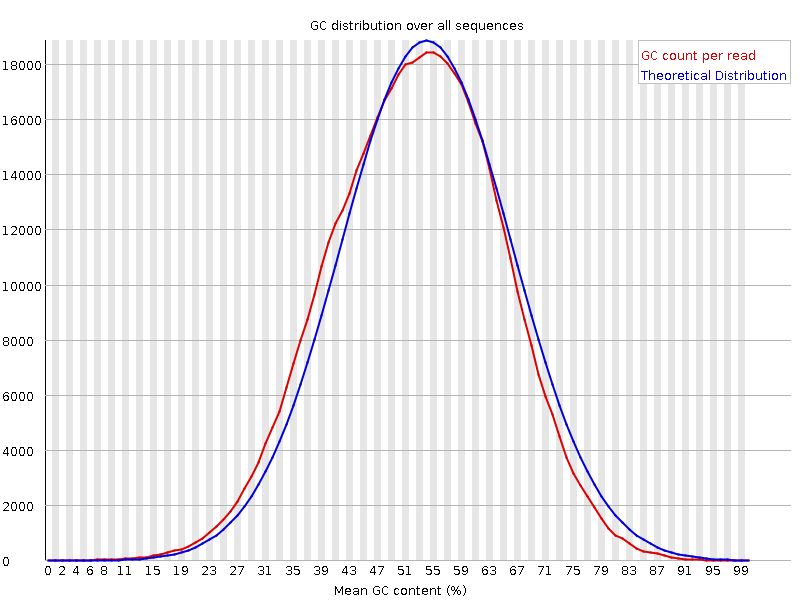
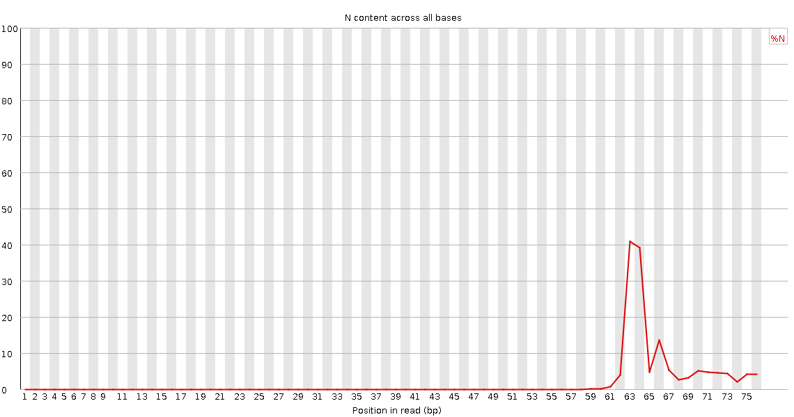
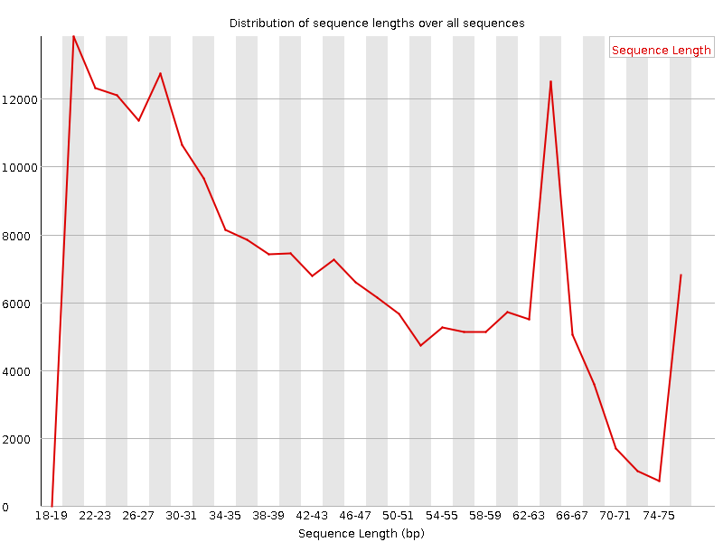
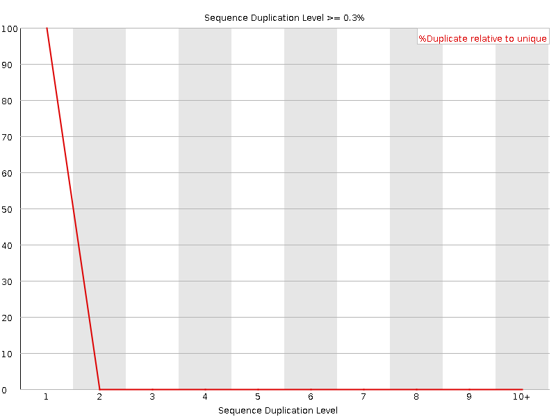
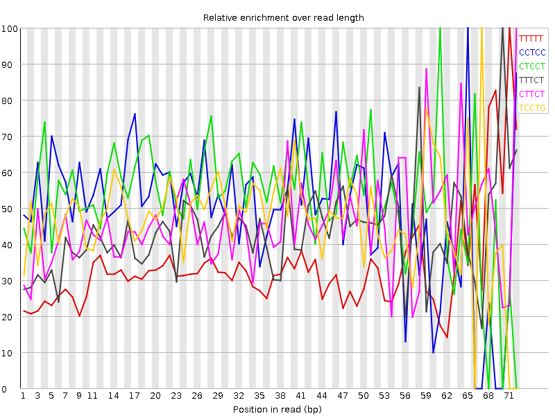

![[OK]](Icons/tick.png) Basic Statistics
Basic Statistics
| Measure | Value |
|---|---|
| Filename | NA12878-trimmed_3.fastq.gz |
| File type | Conventional base calls |
| Encoding | Sanger / Illumina 1.9 |
| Total Sequences | 209198 |
| Filtered Sequences | 0 |
| Sequence length | 20-76 |
| %GC | 49 |
![[FAIL]](Icons/error.png) Per base sequence quality
Per base sequence quality

![[WARN]](Icons/warning.png) Per sequence quality scores
Per sequence quality scores

Per base sequence content

Per base GC content

Per sequence GC content

Per base N content

Sequence Length Distribution

Sequence Duplication Levels

Overrepresented sequences
No overrepresented sequences
Kmer Content

| Sequence | Count | Obs/Exp Overall | Obs/Exp Max | Max Obs/Exp Position |
|---|---|---|---|---|
| TTTTT | 15270 | 3.542732 | 11.756368 | 71 |
| CCTCC | 11345 | 3.0611389 | 5.6181836 | 65 |
| CTCCT | 11230 | 2.9178534 | 5.202203 | 61 |
| TTTCT | 11125 | 2.680366 | 6.641186 | 70 |
| CTTCT | 10485 | 2.6233566 | 6.0885468 | 72 |
| TCCTG | 13345 | 2.6016102 | 5.398106 | 67 |
| TTCTT | 10720 | 2.5827885 | 7.5249343 | 65 |
| CAGCA | 19410 | 2.4166625 | 6.0596175 | 72 |
| CCAGC | 14880 | 2.4074361 | 5.4655576 | 71 |
| TCTTT | 9750 | 2.3490849 | 8.876162 | 66 |
| CTCTG | 11945 | 2.32868 | 5.110897 | 69 |
| TCTCT | 9015 | 2.255561 | 6.0885468 | 72 |
| CCTCT | 8515 | 2.212424 | 5.449381 | 69 |
| ATTTT | 11875 | 2.2017415 | 7.777251 | 69 |
| TTTTC | 9080 | 2.1876605 | 5.312949 | 70 |
| CACAC | 12795 | 2.1231992 | 6.113383 | 66 |
| TTCTG | 11070 | 2.0781476 | 5.28482 | 71 |
| CTTTT | 8555 | 2.0611715 | 5.673718 | 64 |
| TCCTT | 8225 | 2.0579026 | 5.4181976 | 62 |
| CTCAG | 12980 | 2.0222356 | 5.032938 | 67 |
| ACACA | 15650 | 1.9984965 | 7.0904727 | 65 |
| CTTTG | 10630 | 1.9955477 | 5.379173 | 66 |
| TTTTG | 10720 | 1.9378886 | 6.976115 | 70 |
| TGTTT | 10595 | 1.9152919 | 5.00555 | 67 |
| TTTCC | 7625 | 1.907782 | 5.4181976 | 62 |
| TTTGT | 10550 | 1.9071572 | 6.5985737 | 72 |
| TCTGT | 9640 | 1.809697 | 5.2848206 | 71 |
| TATTT | 8815 | 1.6343874 | 9.187211 | 68 |
| TTGTT | 8840 | 1.598035 | 6.5985737 | 72 |
| TCCAT | 7760 | 1.551615 | 5.6289015 | 71 |
| TGTCT | 8260 | 1.5506325 | 6.2095723 | 70 |
| AAAAT | 16305 | 1.5429561 | 5.3279996 | 71 |
| CTGTC | 7710 | 1.503066 | 5.3737226 | 70 |
| TTTAT | 8080 | 1.4981111 | 5.6398487 | 72 |
| TTATT | 6985 | 1.2950875 | 5.9895916 | 67 |
| GATTT | 8340 | 1.2048512 | 5.575027 | 70 |
| ATTCA | 7460 | 1.1478884 | 5.64758 | 69 |
| CTACA | 6140 | 0.9811242 | 5.162026 | 67 |
| GACTC | 6095 | 0.94957817 | 6.1402555 | 71 |